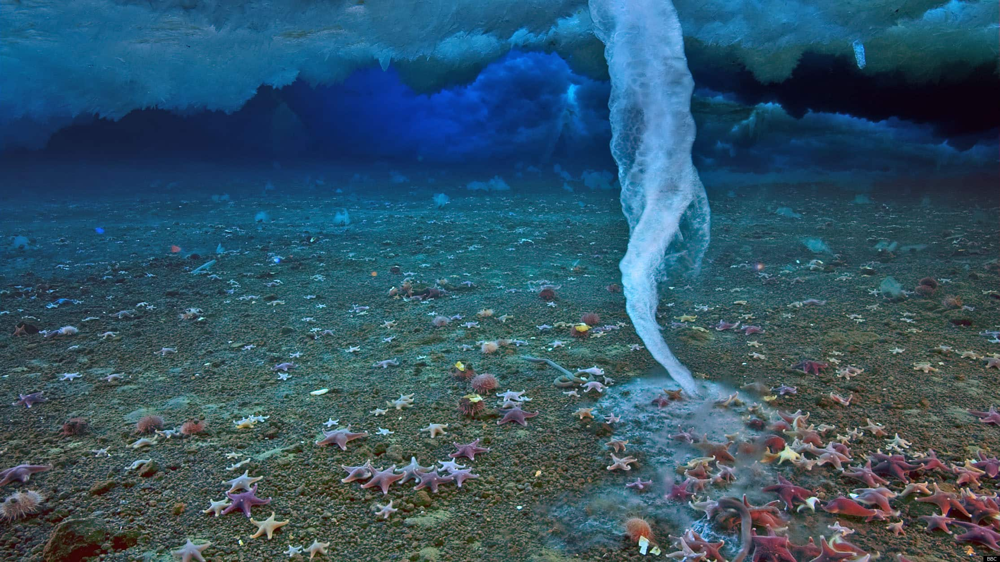

Milky sea
Um mar que brilha durante a noite, e que antigamente causava medo nos marinheiros por parecer ter vindo de um filme de terror. O milky sea é um fenômeno causado por bactérias bioluminescentes, onde bilhões delas se juntam e causam o efeito de um mar iluminado.
A grande questão por trás desse fenômeno, é que até hoje não se sabe como ele é causado. Os cientistas ainda tentam descobrir como e porque uma quantidade tão grande dessas bactérias se junta na superfície do mar. Para isso, são usados satélites para identificar onde ocorrerá o próximo milky sea, para que sejam colotadas amostras para estudo.
Maré vermelha
Um fenômeno que deixa a água com uma tonalidade marrom, alaranjada ou, na maioria das vezes, avermelhada, é causado devido a um desenvolvimento exarcebado de um certo tipo de fitoplâncton. Esse desenvolvimento se da a partir de certas características da água no local, como altas temperaturas, chuvas fortes, lançamento de esgoto na água, luz solar e quantidade de nutrientes presentes.
Assim como no fenômeno anterior, não se sabe porque uma quantidade tão grande dessas criaturas se juntam no mesmo lugar.
Esse fenômeno, apesar de parecer ser apenas uma mudança de cor da água, tem suas consequências. Algumas espécies desse fitoplâncton podem liberar substâncias tóxicas, que causam a morte de peixes e contaminam mexilhôes, que, se comidos por seres humanos, pode causar problemas intestinais e até paralisar o sistema respiratório.
Dedo de gelo ou Brinicle
O Brinicle, ou Dedo de gelo, é um fenômeno mortal que só ocorre em águas polares e acontece pelo rápido congelamento da água, que tem uma temperatura maior que a exterior. Ao se congelar, junto ao sal presente na água, é formada uma espécie de "dedo". Você provavelmente já sabe o que acontece com água e gelo juntos, uma aceleração do congelamente. É isso que torna esse fenômeno mortal, todos os seres vivos que ele toca acabam morrendo congelados em questão de segundos.